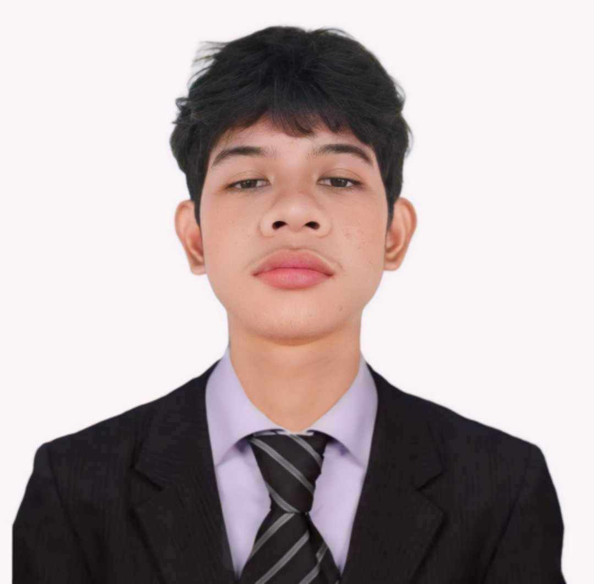

PROFILE
HI! I'm Win Love L. Punzalan I am aspiring web designer and to master Python Language
EXPERTISE
- HTML
- Python
- Photoshop
- CSS
CERTIFICATION
Still in progress
Win Love L. Punzalan
STUDENT
WORK EXPERIENCE
Global Reciprocal College
College
- MISSION- GRC is creating a culture for successful, socially responsible, morally upright skilled workers
and highly competent professionals through values-based quality education.
VISSION- A global community of excellent individuals with values.
EJIST CALOOCAN
Senior High School
- Emmanuel John Institute of Science & Technology, Inc. (EJIST): This is a technical and vocational education institution in the Philippines, focusing on providing training in fields such as electronics, web development, and computer programming. EJIST aims to equip students with technical skills and academic knowledge to prepare them for the demands of the community and industry.
EDUCATION
Global Reciprocal College
Bachelor of Science in Information Technology